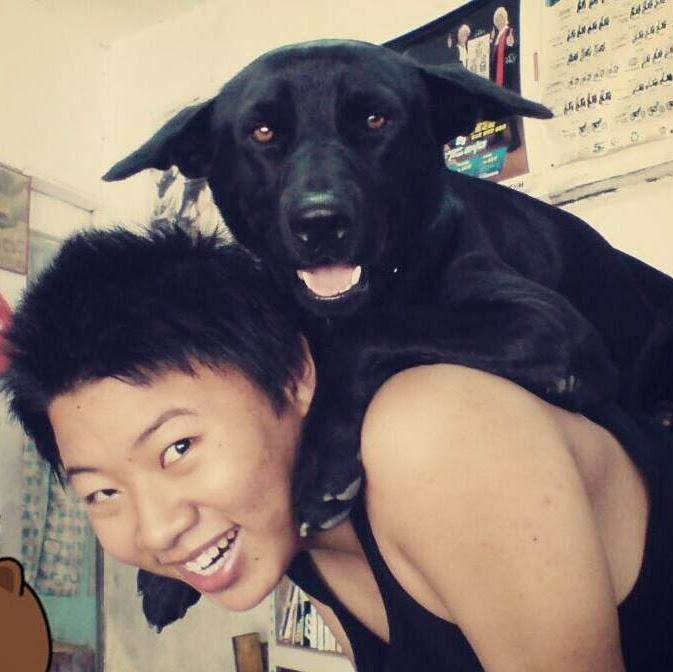

專注於智慧工廠運營與資產生命週期管理。於 Gogoro 職期間，不僅達成 98% 設備妥善率，更主動研發 IoT 監測模組優化廠務效率。具備卓越的跨部門協作能力與排除複雜機電故障的臨床經驗，致力於將先進的物聯網架構（如 HomeKit/HomeSpan）導入工業場域，實現預測性維修。
獨立開發具備多維度感測能力（溫濕度、電流監測）的物聯網節點。透過 HomeKit 協議達成低延遲、高安全性的即時反饋系統，此專案充分展示了對工業 4.0 邊緣運算與通訊協議的掌握能力。